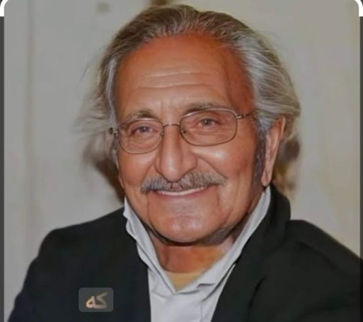
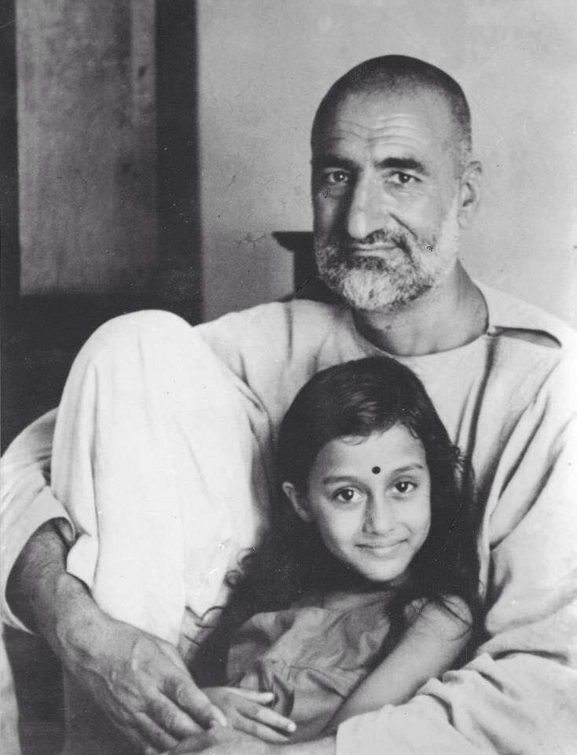
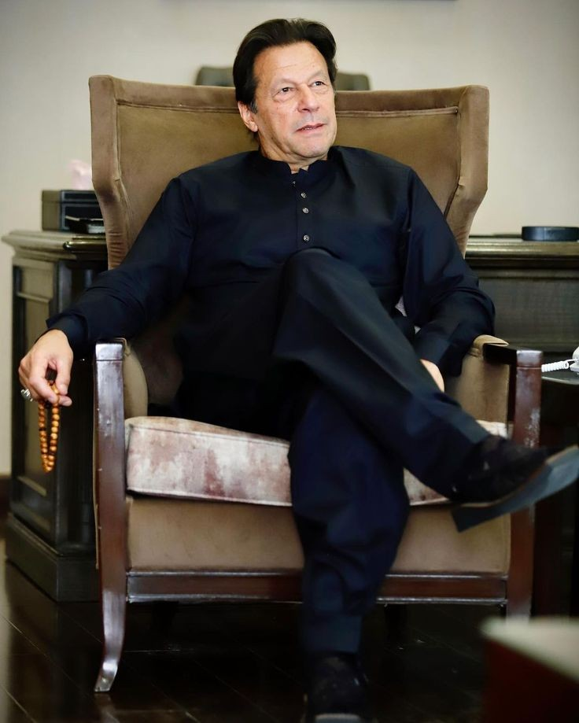
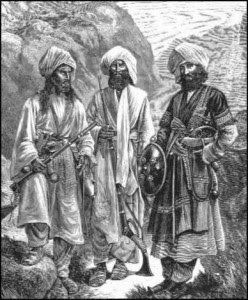

Ghani Khan Baba

Ghani Khan, often referred to as "Ghani Khan Baba," is one of the most celebrated poets and intellectuals of the Pashtun culture. Born on January 1, 1914, in Utmanzai, a small village in Charsadda, Pakistan, he was the son of the renowned political leader Khan Abdul Ghaffar Khan (Bacha Khan), and was deeply influenced by his father’s vision of peace and reform.
Early Life and Education
Ghani Khan's early education was rooted in both traditional and modern learning. He initially studied in his hometown before moving to Rabindranath Tagore's Shantiniketan in India, which played a crucial role in shaping his artistic and philosophical outlook. Later, he traveled to England to study engineering, but his passion for literature, art, and philosophy took precedence over his formal education.
Literary Contributions
Ghani Khan's poetry is revered for its profound depth, vibrant imagery, and philosophical undertones. His work often reflects the struggles of his people, the beauty of his land, and the existential musings of a deeply introspective mind. His most famous poetry collections include *"Da Panjray Chaghaar"*, *"Panoos"*, and *"Palwashay."* His poems often explore themes of love, nature, spirituality, and the human condition, making him a voice for both the personal and collective experiences of his people.
Philosophy and Art
Beyond poetry, Ghani Khan was also a philosopher and a visual artist. His thoughts were a unique blend of Eastern mysticism and Western rationalism. He believed in the power of art and creativity to transcend the ordinary and touch the divine. His sculptures and paintings, much like his poetry, were a reflection of his inner world and his deep connection to his cultural roots.
Legacy
Ghani Khan Baba remains an iconic figure in Pashto literature and culture. His work continues to inspire generations of poets, artists, and thinkers. He is remembered not only for his literary genius but also for his unwavering commitment to the cultural and intellectual enrichment of his people. Ghani Khan's legacy lives on through his timeless poetry, which continues to resonate with audiences across the world.
Conclusion
Ghani Khan Baba's life and work embody the spirit of a true artist—one who seeks to explore the depths of the human experience while staying deeply connected to his cultural heritage. His contributions to Pashto literature and art make him a towering figure, whose influence will be felt for generations to come.
The Great Bacha Khan

Bacha Khan: A Legacy of Nonviolence and Reform
Bacha Khan, also known as Abdul Ghaffar Khan, was a prominent Pashtun leader and activist born on February 6, 1890, in the village of Utmanzai in the Peshawar Valley, which is now part of modern-day Pakistan. He is celebrated for his unwavering commitment to nonviolence and his efforts to promote education, social reform, and unity among the Pashtun people.
Life and Influence
Bacha Khan grew up in a region deeply influenced by British colonial rule, where Pashtun society was often caught in the crossfire of imperial interests. Despite the challenges, he was determined to uplift his community through education and social reform. In 1910, he founded a school in his village, aiming to provide modern education to Pashtun children and instill in them the values of tolerance, self-reliance, and nonviolence.
The Khudai Khidmatgar Movement
One of Bacha Khan's most significant contributions was the establishment of the Khudai Khidmatgar ("Servants of God") movement in 1929. This movement, also known as the "Red Shirts," was a nonviolent resistance group committed to social reform and the fight for independence from British rule. The Khudai Khidmatgars were known for their distinctive red uniforms and their disciplined commitment to nonviolence, even in the face of brutal repression by the British authorities.
Bacha Khan's philosophy was heavily influenced by the teachings of Mahatma Gandhi, with whom he shared a close friendship and mutual respect. Like Gandhi, Bacha Khan believed that true freedom could only be achieved through peaceful means. He tirelessly worked to unite the Pashtun people, advocating for their rights while promoting the idea of an independent, self-sufficient India.
Struggle and Imprisonment
Throughout his life, Bacha Khan faced significant opposition from both the British and later, the Pakistani government. He was imprisoned multiple times for his activism and his unwavering stance against violence and oppression. Despite these challenges, he remained committed to his principles, never wavering in his belief that nonviolence was the only path to true freedom and justice.
Legacy
Bacha Khan's legacy extends far beyond his contributions to the Indian independence movement. He is remembered as a pioneer of nonviolence in South Asia and as a champion of education and social reform among the Pashtuns. His work laid the foundation for a more inclusive and progressive society, where the principles of peace, justice, and equality could flourish.
Bacha Khan passed away on January 20, 1988, but his teachings continue to inspire generations across the world. His life is a testament to the power of nonviolent resistance and the enduring strength of the human spirit in the face of adversity.
Imran Khan

Early Life and Cricket Career
Imran Khan was born on October 5, 1952, in Lahore, Pakistan. He gained international fame as the captain of the Pakistan national cricket team, leading them to their first and only Cricket World Cup victory in 1992. His charismatic leadership and determination on the field made him a national hero.
Transition to Politics
After retiring from cricket, Imran Khan founded the Pakistan Tehreek-e-Insaf (PTI) party in 1996. His political journey was marked by years of struggle, but his message of change, justice, and anti-corruption gradually gained traction.
Prime Minister of Pakistan
In 2018, Khan's party won the general elections, and he became the 22nd Prime Minister of Pakistan. His tenure focused on economic reforms, anti-corruption measures, and social welfare programs, though it faced challenges from political opposition, economic difficulties, and external pressures.
Philanthropic Efforts
Beyond his political and sports careers, Imran Khan is renowned for his philanthropic work. He founded the Shaukat Khanum Memorial Cancer Hospital & Research Centre, which provides free cancer treatment, and established Namal University to offer quality education to underprivileged students.
Legacy
Imran Khan's legacy is multifaceted—he is celebrated as a sports hero, a reformist politician, and a dedicated philanthropist. His life reflects a commitment to public service, driven by a vision of a better Pakistan.
Haji Mirzali Khan wazir

Early Life and Background
Haji Mirzali Khan, also known as the Faqir of Ipi, was born in 1897 in the village of Kurta, located in the North Waziristan region of present-day Pakistan. He belonged to the Tori Khel clan of the Wazir tribe, a fiercely independent group known for their resistance to external control. Raised in a religious environment, Mirzali Khan developed a deep commitment to Islam from an early age.
Resistance Against British Rule
Haji Mirzali Khan is best known for his staunch resistance against British colonial rule in the early 20th century. His opposition began in earnest in 1936 when he led a revolt against the British after they decided to extradite a girl who had converted to Islam from Hinduism back to her family. This incident ignited a long-standing struggle, with Haji Mirzali Khan positioning himself as a leader of the anti-colonial resistance in the tribal areas.
The Faqir of Ipi and the Guerrilla Campaign
The title "Faqir of Ipi" became synonymous with Haji Mirzali Khan during his resistance against the British. He employed guerrilla warfare tactics, utilizing the rugged terrain of Waziristan to his advantage. His forces, though smaller in number and less equipped, managed to engage the British in a prolonged conflict that lasted for several years. Despite the overwhelming odds, Haji Mirzali Khan's determination and knowledge of the local geography allowed him to evade capture.
Role in the Creation of Pakistan
While Haji Mirzali Khan was primarily focused on resisting British rule, his influence also extended to the political developments that led to the creation of Pakistan. However, his relationship with the emerging Pakistani state was complex. Despite sharing a common religion, he remained skeptical of the central authority and preferred the autonomy of the tribal areas. His resistance continued even after the creation of Pakistan in 1947, as he opposed the centralization policies of the new government.
Legacy and Influence
Haji Mirzali Khan passed away in 1960, but his legacy as a symbol of resistance and independence remains strong, especially in the tribal regions of Pakistan. He is remembered as a freedom fighter who stood up against colonial powers and advocated for the rights and autonomy of his people. The Faqir of Ipi remains an iconic figure in the history of Pashtun resistance, embodying the spirit of defiance against oppression.
Conclusion
Haji Mirzali Khan's life and struggle are emblematic of the broader resistance against colonial rule in South Asia. His unwavering commitment to his principles, his strategic acumen in guerrilla warfare, and his complex relationship with the emerging Pakistani state make him a significant figure in the history of the region. His legacy continues to inspire those who value independence and the defense of cultural and religious identity.